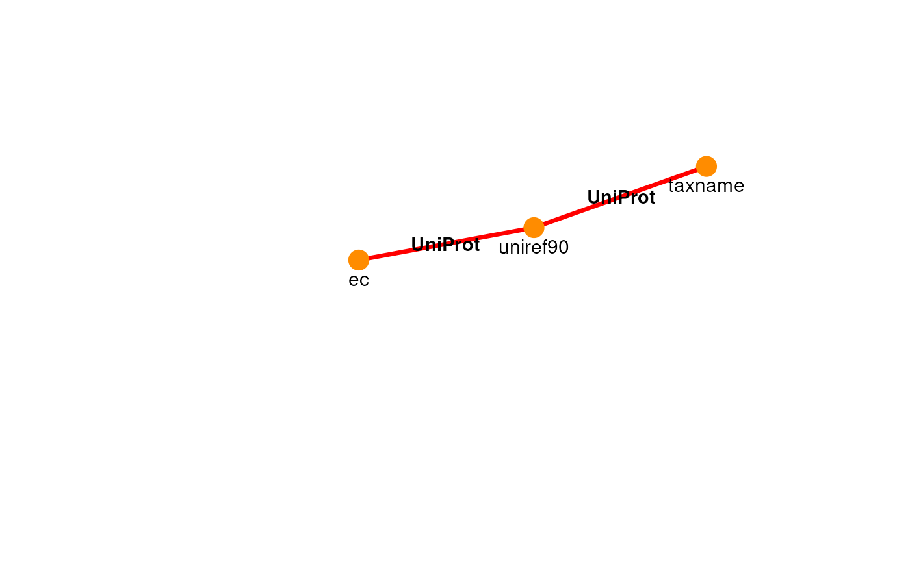

# ariadne: module integration by on-demand translation of annotations using R
Giulio Benedetti
University of Turkugiulio.benedetti@utu.fi
2 April 2026
Source:vignettes/ariadne.Rmd
ariadne.RmdIntroduction
ariadne provides a rapid and robust approach to incorporate taxonomic and functional module analyses into your bioinformatic workflow. Despite the presence of specialised bioinformatic tools, on-demand functional annotation of taxonomic features directly in R has remained challenging. To make this simple, ariadne offers tools to rapidly annotate features with taxonomic or functional modules based on online resources (BugSigDB, ChocoPhlAn, Web of Life and UniProt). In addition, we provide tools to incorporate, analyse and visualise module information into popular standardised containers, such as TreeSummarizedExperiment.
Tutorial
Installation
if( !requireNamespace("BiocManager", quietly = TRUE) ){
install.packages("BiocManager")
}
BiocManager::install("ariadne")Explore ariadne graph
library(ariadne)
#> Registered S3 method overwritten by 'bit64':
#> method from
#> print.bitstring tools
#
graph <- ariadne()
#
plotPath(graph)
searchPath(graph, taxname ~ ec, k = 10)
#> Path 1:
#> taxname -(UniProt)-> uniref100 -(UniProt)-> ec
#>
#> Path 2:
#> taxname -(UniProt)-> uniref90 -(UniProt)-> ec
#>
#> Path 3:
#> taxname -(UniProt)-> uniref50 -(UniProt)-> ec
#>
#> Path 4:
#> taxname -(UniProt)-> uniref90 -(ChocoPhlAn)-> ec
#>
#> Path 5:
#> taxname -(UniProt)-> uniref50 -(ChocoPhlAn)-> ec
#>
#> Path 6:
#> taxname -(UniProt)-> uniref100 -(UniProt)-> rhea -(Rhea)-> ec
#>
#> Path 7:
#> taxname -(UniProt)-> uniref50 -(ChocoPhlAn)-> go -(GO)-> ec
#>
#> Path 8:
#> taxname -(UniProt)-> uniref90 -(WoL)-> go -(GO)-> ec
#>
#> Path 9:
#> taxname -(UniProt)-> taxid -(UniProt)-> uniref90 -(UniProt)-> ec
#>
#> Path 10:
#> taxname -(UniProt)-> uniref100 -(UniProt)-> uniprotkb -(UniProt)-> ec
plotPath(graph, taxname ~ ec, include = "uniref90", focus = TRUE)
library(mia)
#> Loading required package: MultiAssayExperiment
#> Loading required package: SummarizedExperiment
#> Loading required package: MatrixGenerics
#> Loading required package: matrixStats
#>
#> Attaching package: 'MatrixGenerics'
#> The following objects are masked from 'package:matrixStats':
#>
#> colAlls, colAnyNAs, colAnys, colAvgsPerRowSet, colCollapse,
#> colCounts, colCummaxs, colCummins, colCumprods, colCumsums,
#> colDiffs, colIQRDiffs, colIQRs, colLogSumExps, colMadDiffs,
#> colMads, colMaxs, colMeans2, colMedians, colMins, colOrderStats,
#> colProds, colQuantiles, colRanges, colRanks, colSdDiffs, colSds,
#> colSums2, colTabulates, colVarDiffs, colVars, colWeightedMads,
#> colWeightedMeans, colWeightedMedians, colWeightedSds,
#> colWeightedVars, rowAlls, rowAnyNAs, rowAnys, rowAvgsPerColSet,
#> rowCollapse, rowCounts, rowCummaxs, rowCummins, rowCumprods,
#> rowCumsums, rowDiffs, rowIQRDiffs, rowIQRs, rowLogSumExps,
#> rowMadDiffs, rowMads, rowMaxs, rowMeans2, rowMedians, rowMins,
#> rowOrderStats, rowProds, rowQuantiles, rowRanges, rowRanks,
#> rowSdDiffs, rowSds, rowSums2, rowTabulates, rowVarDiffs, rowVars,
#> rowWeightedMads, rowWeightedMeans, rowWeightedMedians,
#> rowWeightedSds, rowWeightedVars
#> Loading required package: GenomicRanges
#> Loading required package: stats4
#> Loading required package: BiocGenerics
#> Loading required package: generics
#>
#> Attaching package: 'generics'
#> The following objects are masked from 'package:base':
#>
#> as.difftime, as.factor, as.ordered, intersect, is.element, setdiff,
#> setequal, union
#>
#> Attaching package: 'BiocGenerics'
#> The following objects are masked from 'package:stats':
#>
#> IQR, mad, sd, var, xtabs
#> The following objects are masked from 'package:base':
#>
#> anyDuplicated, aperm, append, as.data.frame, basename, cbind,
#> colnames, dirname, do.call, duplicated, eval, evalq, Filter, Find,
#> get, grep, grepl, is.unsorted, lapply, Map, mapply, match, mget,
#> order, paste, pmax, pmax.int, pmin, pmin.int, Position, rank,
#> rbind, Reduce, rownames, sapply, saveRDS, table, tapply, unique,
#> unsplit, which.max, which.min
#> Loading required package: S4Vectors
#>
#> Attaching package: 'S4Vectors'
#> The following object is masked from 'package:utils':
#>
#> findMatches
#> The following objects are masked from 'package:base':
#>
#> expand.grid, I, unname
#> Loading required package: IRanges
#> Loading required package: Seqinfo
#> Loading required package: Biobase
#> Welcome to Bioconductor
#>
#> Vignettes contain introductory material; view with
#> 'browseVignettes()'. To cite Bioconductor, see
#> 'citation("Biobase")', and for packages 'citation("pkgname")'.
#>
#> Attaching package: 'Biobase'
#> The following object is masked from 'package:MatrixGenerics':
#>
#> rowMedians
#> The following objects are masked from 'package:matrixStats':
#>
#> anyMissing, rowMedians
#> Loading required package: SingleCellExperiment
#> Loading required package: TreeSummarizedExperiment
#> Loading required package: Biostrings
#> Loading required package: XVector
#>
#> Attaching package: 'Biostrings'
#> The following object is masked from 'package:base':
#>
#> strsplit
#> This is mia version 1.19.7
#> - Online documentation and vignettes: https://microbiome.github.io/mia/
#> - Online book 'Orchestrating Microbiome Analysis (OMA)': https://microbiome.github.io/OMA/docs/devel/
# Import dataset
data("Tengeler2020", package = "mia")
tse <- Tengeler2020
# Retrieve taxon names
tax.labs <- getTaxonomyLabels(tse, make.unique = FALSE)
tax.labs <- sub("^.+:", "", tax.labs)
tax2ec <- weavePath(
graph,
taxname ~ ec,
include = "uniref90",
init = tax.labs,
factor = 8
)
#> taxname -(UniProt)-> uniref90
#> uniref90 -(UniProt)-> ec
head(tax2ec)
#> taxname ec
#> 1 f__Enterobacteriaceae 1.-.-.-
#> 2 f__Lachnospiraceae 1.-.-.-
#> 3 g__Akkermansia 1.-.-.-
#> 4 g__Alistipes 1.-.-.-
#> 5 g__Anaerostipes 1.-.-.-
#> 6 g__Anaerotruncus 1.-.-.-Resources
Citation
We hope that ariadne will be useful for your research. Please use the following information to cite the package and the overall approach. Thank you!
## Citation info
citation("ariadne")
#> Warning in citation("ariadne"): could not determine year for 'ariadne' from
#> package DESCRIPTION file
#> To cite package 'ariadne' in publications use:
#>
#> Benedetti G, Bastiaanssen T, Lahti L (????). _ariadne: Assembling
#> Relational Information Across the Database NEtwork_. R package
#> version 0.2.1, <https://github.com/Minotau-R/ariadne>.
#>
#> A BibTeX entry for LaTeX users is
#>
#> @Manual{,
#> title = {ariadne: Assembling Relational Information Across the Database NEtwork},
#> author = {Giulio Benedetti and Thomaz Bastiaanssen and Leo Lahti},
#> note = {R package version 0.2.1},
#> url = {https://github.com/Minotau-R/ariadne},
#> }Background Knowledge
ariadne originates from the joint effort of the R/Bioconductor community. It is mainly based on the following software:
- R, statistical programming language [@core2025r]
- mia, framework for microbiome data analysis [@borman2025mia]
- anansi, Annotation-based Analysis of Specific Interactions [@bastiaanssen2023anansi]
- TreeSummarizedExperiment, S4 container for hierarchical data [@huang2020treesummarizedexperiment]
Help
You can reach us by one of the communication channels listed here. We are happy to receive questions, suggestions as well as contributions. For the last point, check the contributor guidelines.
Reproducibility
R session information:
#> R Under development (unstable) (2026-03-28 r89738)
#> Platform: x86_64-pc-linux-gnu
#> Running under: Ubuntu 24.04.4 LTS
#>
#> Matrix products: default
#> BLAS: /usr/lib/x86_64-linux-gnu/openblas-pthread/libblas.so.3
#> LAPACK: /usr/lib/x86_64-linux-gnu/openblas-pthread/libopenblasp-r0.3.26.so; LAPACK version 3.12.0
#>
#> locale:
#> [1] LC_CTYPE=en_US.UTF-8 LC_NUMERIC=C LC_TIME=en_US.UTF-8 LC_COLLATE=en_US.UTF-8
#> [5] LC_MONETARY=en_US.UTF-8 LC_MESSAGES=en_US.UTF-8 LC_PAPER=en_US.UTF-8 LC_NAME=C
#> [9] LC_ADDRESS=C LC_TELEPHONE=C LC_MEASUREMENT=en_US.UTF-8 LC_IDENTIFICATION=C
#>
#> time zone: UTC
#> tzcode source: system (glibc)
#>
#> attached base packages:
#> [1] stats4 stats graphics grDevices utils datasets methods base
#>
#> other attached packages:
#> [1] mia_1.19.7 TreeSummarizedExperiment_2.19.0 Biostrings_2.79.5
#> [4] XVector_0.51.0 SingleCellExperiment_1.33.2 MultiAssayExperiment_1.37.4
#> [7] SummarizedExperiment_1.41.1 Biobase_2.71.0 GenomicRanges_1.63.1
#> [10] Seqinfo_1.1.0 IRanges_2.45.0 S4Vectors_0.49.0
#> [13] BiocGenerics_0.57.0 generics_0.1.4 MatrixGenerics_1.23.0
#> [16] matrixStats_1.5.0 ariadne_0.2.1 BiocStyle_2.39.0
#>
#> loaded via a namespace (and not attached):
#> [1] RColorBrewer_1.1-3 jsonlite_2.0.0 magrittr_2.0.4 ggbeeswarm_0.7.3
#> [5] farver_2.1.2 rmarkdown_2.31 fs_2.0.1 ragg_1.5.2
#> [9] vctrs_0.7.2 DelayedMatrixStats_1.33.0 memoise_2.0.1 forcats_1.0.1
#> [13] htmltools_0.5.9 S4Arrays_1.11.1 progress_1.2.3 curl_7.0.0
#> [17] BiocNeighbors_2.5.4 SparseArray_1.11.12 sass_0.4.10 bslib_0.10.0
#> [21] htmlwidgets_1.6.4 desc_1.4.3 plyr_1.8.9 DECIPHER_3.7.1
#> [25] httr2_1.2.2 cachem_1.1.0 igraph_2.2.2 lifecycle_1.0.5
#> [29] pkgconfig_2.0.3 rsvd_1.0.5 Matrix_1.7-5 R6_2.6.1
#> [33] fastmap_1.2.0 digest_0.6.39 scater_1.39.3 irlba_2.3.7
#> [37] textshaping_1.0.5 RSQLite_2.4.6 vegan_2.7-3 beachmat_2.27.3
#> [41] filelock_1.0.3 labeling_0.4.3 MultiFactor_0.1.2 mgcv_1.9-4
#> [45] httr_1.4.8 polyclip_1.10-7 abind_1.4-8 compiler_4.7.0
#> [49] bit64_4.6.0-1 withr_3.0.2 S7_0.2.1 BiocParallel_1.45.0
#> [53] viridis_0.6.5 DBI_1.3.0 ggforce_0.5.0 rotl_3.1.1
#> [57] MASS_7.3-65 rappdirs_0.3.4 DelayedArray_0.37.1 bluster_1.21.1
#> [61] permute_0.9-10 tools_4.7.0 vipor_0.4.7 rncl_0.8.9
#> [65] otel_0.2.0 beeswarm_0.4.0 ape_5.8-1 rentrez_1.2.4
#> [69] glue_1.8.0 nlme_3.1-169 grid_4.7.0 reshape2_1.4.5
#> [73] cluster_2.1.8.2 gtable_0.3.6 tzdb_0.5.0 tidyr_1.3.2
#> [77] data.table_1.18.2.1 hms_1.1.4 BiocSingular_1.27.1 tidygraph_1.3.1
#> [81] ScaledMatrix_1.19.0 ggrepel_0.9.8 pillar_1.11.1 stringr_1.6.0
#> [85] yulab.utils_0.2.4 splines_4.7.0 dplyr_1.2.0 tweenr_2.0.3
#> [89] BiocFileCache_3.1.0 treeio_1.35.0 lattice_0.22-9 bit_4.6.0
#> [93] DirichletMultinomial_1.53.0 tidyselect_1.2.1 scuttle_1.21.0 knitr_1.51
#> [97] gridExtra_2.3 bookdown_0.46 xfun_0.57 graphlayouts_1.2.3
#> [101] stringi_1.8.7 lazyeval_0.2.2 yaml_2.3.12 evaluate_1.0.5
#> [105] codetools_0.2-20 ggraph_2.2.2 tibble_3.3.1 BiocManager_1.30.27
#> [109] cli_3.6.5 arrow_23.0.1.2 systemfonts_1.3.2 jquerylib_0.1.4
#> [113] Rcpp_1.1.1 dbplyr_2.5.2 png_0.1-9 XML_3.99-0.23
#> [117] parallel_4.7.0 pkgdown_2.2.0 ggplot2_4.0.2 readr_2.2.0
#> [121] assertthat_0.2.1 blob_1.3.0 prettyunits_1.2.0 ecodive_2.2.2
#> [125] sparseMatrixStats_1.23.0 decontam_1.31.0 viridisLite_0.4.3 tidytree_0.4.7
#> [129] scales_1.4.0 purrr_1.2.1 crayon_1.5.3 rlang_1.1.7
#> [133] KEGGREST_1.51.1